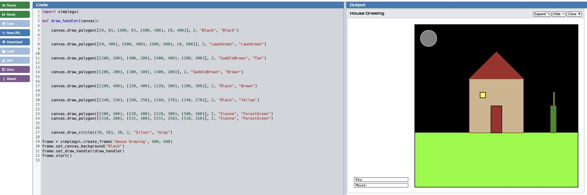

Weclome to the projects Page! This is where all of my projects are right here and presented to those who want to check them out. Click the links below to take a closer look!
This is a video walkthrough of the app Emotimatch for the Congressional app challenge. This app is essentially designed to help others control their emotions or express them in any shape or form.
This project was a fun project where I made a custom emoji of a frog's face using Python Turtle.
Draw A House

This project was where simplegui modules were ultilized to make a house of my personal liking.
This is a project where 3 emojis would be made on CodeSkulptor using simplegui functions.
This was a simple animation that used colors, lines, and circles.